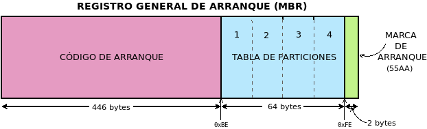
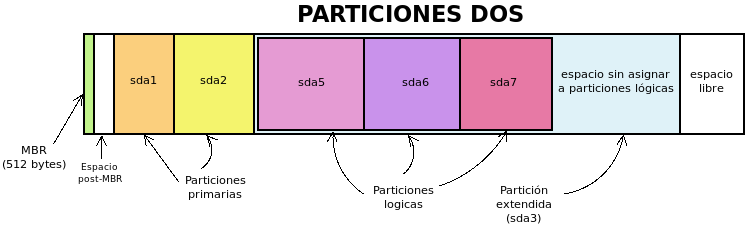
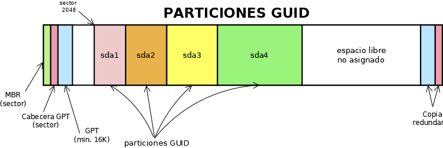

5.1.1. Particiones¶
Ya que ha quedado establecido que los discos pueden dividirse en partes, llamadas particiones, cada una de las cuales contiene un sistema de archivos distinto. El sistema de particiones que usemos está bastante libado a cómo sea el arranque, pero bajo este epígrafe nos limitaremos a describir algunos de ellos sin preocuparnos por cómo sea este arranque.
Antes de meternos en harina, no obstante, es conveniente distinguir las particiones según la función para la que son creadas:
- Partición de sistema
Es aquella partición que alberga un sistema operativo. En un equipo de trabajo es forzoso que exista al menos una partición de este tipo en alguno de sus discos duros
- Partición de datos
Es aquella partición destinada a servir de almacén de datos, pero que no contiene ningún sistema operativo. Una partición para almacenar los directorios de los usuarios es una partición de este tipo. Por supuesto, no son imprescindibles y una partición de sistema puede también servir como almacén de datos, pero usar particiones de este tipo ayuda a independizar el sistema de los datos y son, en muchos casos, aconsejables.
- Partición especial
Es aquella destinada a un uso distinto al de los dos tipos anteriores. Particiones especiales son la que dedican muchos Linux a memoria de intercambio, la Reservada de Windows o la partición ESP para albergar cargadores de arranque.
A partir del nacimiento y triunfo de la especificación UEFI (que ya trataremos al analizar el arranque), se ha impuesto el particionado GPT. Anteriormente, existían múltples sistemas de particiones, pero el mayoritario es el conocido como el particionado DOS. Por tanto, centraramos el estudio en estos dos:
El particionado DOS.
El particionado GPT.
Antes de empezar, no obstante, es útil introducir un término que es aplicable a cualquier sistema de particiones: la alineación (o alineamiento). La alineación es el número de sectores múltiplo del cual deben situarse los comienzos y finales de las particiones. Así, por ejemplo, si la alineación es 1MiB, esto es, 2048 sectores (como lo es habitualmente), las particiones sólo pueden empezar en el sector 0 (lo cual es imposible como veremos), 2048, 4096, etc. Una partición que no empezase o acabase en un sector múltiplo de 2048 sería una partición no alineada.
Nota
Este artículo de 2011 afirma que basta con que las particiones estén alineadas en múltiplos de 4KiB. La página de manual de sgdisk, por su parte, sostiene que la alineación en múltiplos de 1MiB es necesaria para optimizar el rendimiento de la tecnología Advanced Format de Western Digital, de algunos RAIDs y de los dispositivos SSD.
5.1.1.1. DOS¶
Este sistema se basa en la existencia de un MBR, esto es, en que el primer sector del disco duro (512 bytes) contiene la metainformación del particionado.
Su contenido es el siguiente:
Los primeros 446 bytes contiene un código de arranque, cuya discusión pospondremos para cuando analicemos el arranque.
Los 64 bytes siguientes sirven para definir la tabla de particiones del disco.
los dos últimos bytes son una marca de arranque que contiene siempre
55AA.
5.1.1.1.1. Tabla de particiones¶
La tabla de particiones define cuáles son las particiones del disco, cada una de las cuales requiere 16 bytes para su descripción, lo cual implica que, en principio, sólo sea posible definir cuatro particiones. La información para cada partición es la siguiente:
Tamaño (bytes) |
Descripción |
|---|---|
1 |
Marca de activa (0x80 es el valor para indicar que es activa). |
3 |
Cilindro, Cabezal, Sector de comienzo. |
1 |
Tipo de partición (informa de su contenido). |
3 |
Cilindro, Cabezal, Sector de final. |
4 |
Direccionamiento de bloque lógico1 de su sector de arranque. |
4 |
Longitud de la partición en sectores. |
A estos datos se pueden hacer algunas aclaraciones y apostillas:
Sólo puede haber una partición marcada como activa. El resto deberán tener todas ese byte a 0.
Se pueden identificar 256 tipos de sistemas de ficheros distintos.
Como para el direccionamiento se usan 4 bytes (32 bits) y cada sector es de 512 bytes, esto determina cuál es el tamaño máximo del disco si se usa este particionado:
\[2^{32}*512 \mathit{B} = 2*2^{40} \mathit{B} =2 \mathit{TB}\]El tamaño máximo de una partición, por la misma razón, coincide con el tamaño máximo de disco.
Nota
A la partición cuya información se recoge en la tabla de particiones se la denomina partición primaria.
Si consideramos todo lo expuesto hasta ahora y que, por ejemplo, se hayan definido tres particiones en la tabla de particiones del MBR, esquemáticamente podríamos representar el estado de las particiones así:

En principio, aún podría definirse una cuarta partición que debería ocupar todo el espacio libre, porque de no hacerlo, el que quedara fuera no sería aprovechable al no poderse definir más particiones.
Nota
Para nombrar las particiones se ha usado la nomenclatura de Linux
sda por fingir que nos encontramos ante el primer disco y un número
correlativo para cada partición.
Obsérvese que entre el MBR (sector 0) y el comienzo de la primera partición (sector 2048), si hemos alineado correctamente las particiones utilizando la alineación habitual hay un pequeño espacio no particionado.
Advertencia
Este espacio es aprovechado por el gestor de arranque GRUB para instalar su segunda fase (lo analizaremos más adelante). En sistemas antiguos, no obstante, las particiones no se alineaban y la primera partición empezaba al comienzo del segundo cabezal2, o sea, en el sector 63.
5.1.1.1.2. Particiones lógicas¶
Dos son las limitaciones fundamentales del particionado DOS:
El tamaño máximo de 2TiB para discos y de particiones que es insalvable, aunque sólo ha empezado a cobrar importancia en fechas recientes.
La limitación de sólo poder crear cuatro particiones.
Para paliar esta segunda limitación, Microsoft se inventó el concepto de partición extendida, como una partición primaria destinada no a contener un sistema de archivos, sino más particiones: en teoría, un número ilimitado. Toda partición contenida dentro de una partición extendida se denomina partición lógica. En cada disco sólo puede haber una partición primaria marcada como partición extendida.
En este caso, hay definidas tres particiones primarias (sda1, sda2 y sda3), la última de las cuales está marcada como extendida. En consecuencia, dentro de ella pueden definirse particiones lógicas (sda5, sda6, sda7). En el espacio sin asignar de la extendida se podrán aún definir una cantidad ilimitado de particiones lógicas; y en el espacio libre fuera de ella una única partición primaria más (la sda4).
Aunque irrelevantes a efectos prácticos, la partición extendida se implementa del siguiente modo:
La partición primaria que hará de partición extendida se marca como de tipo 0x05.
El primer sector de la partición extendida (su VBR) se denomina EBR y tiene la misma estructura que un MBR. En su tabla de particiones se incluyen dos entradas:
La primera entrada refiere la descripción de la partición lógica contigua (la primera).
La segunda entrada refiere el sector en el que empieza el segundo EBR, que se situará a continuación de la primera partición lógica.
Las dos restantes entradas no se usan.
El segundo EBR es como el primero, pero describiendo la segunda partición lógica y el comienzo del tercer EBR y así sucesivamente. En caso de que no existan más particiones lógicas la segunda entrada estará a 0.
En resumen:
Una tabla de particiones DOS es sólo capaz de registrar hasta cuatro particiones primarias.
La definición de todas las particiones primarias se encuentra en el MBR.
Una de las particiones primarias puede marcarse como extendida, lo cual la habilita para contener dentro de ella un número ilimitado de particiones lógicas.
La definición de las particiones lógicas se encuentra distribuida a lo largo de la partición extendida que las contiene.
5.1.1.1.3. Limitaciones¶
Concentremos juntas las limitaciones de este sistema de particionado:
Los escasos 64 bytes para codificar toda la tabla de particiones, provocan que en principio sólo se puedan definir 4 particiones.
Para burlar la limitación anterior, se idea la argucia de la partición extendida, pero no deja de ser un remiendo que provoca que la definición de la tabla de particiones no esté concentrada en un solo punto, sino desperdigada a lo largo de todo el disco.
Sólo se usa un byte para codificar el tipo de partición, lo que ha propiciado que algunos sistemas de ficheros estén identificados por un mismo código. Por ejemplo, 0x07 identifica a NTFS, pero también al HPFS de OS/2.
Por lo ya expuesto, los discos no pueden ser mayores a 2TiB.
5.1.1.2. GPT¶
Nota
En realidad, las particiones son particiones GUID y GPT es acrónimo para referirse a la tabla de particiones: GUID Partition Table. En el texto, se usa incorrectamente en ocasiones el término GPT.
Las particiones GUID se idearon para la especificación UEFI y se van imponiendo según se utiliza esta especificación en las placas bases.
5.1.1.2.1. Descripción¶
El particionado GPT lo compone:
Un MBR, en principio, de mera protección, ya que no se utiliza en UEFI, pero que se reserva por si un usuario maneja una herramienta de particionado sin soporte para particiones GUID. La zona correspondiente al sector de arranque no se usa, y la parte dedicada a la tabla de particiones DOS define una única partición de tipo 0xEE (esto es, GPT) que ocupa todo el disco. Esta información no tiene ninguna utilidad, pero pone sobreaviso al usuario: si usa una herramienta que ignora GPT, tal herramienta no verá un MBR con basura (código incomprensible) sino un tabla de particiones para él válida. Esto evita que nos sugiera crear un MBR válido y el usuario, inconsciente de la equivación, se cargue las particiones GUID y el contenido que pudiera haber en ellas.
El segundo sector compone la cabecera GPT en la que se inscribe un identificador único para el disco, el número de particiones definidas y algunos otros datos más.
Los siguientes sectores se dedican a guardar la información sobre cada partición a razón de cuatro particiones por cada sector. En consecuencia, la definición de cada partición ocupa 128 bytes. Como mínimo se establece que la tabla de particiones ocupe 16KiB, lo que significa que pueden almacenarse al menos \(16*2*4 = 128\) particiones. No obstante, la tabla puede hacerse mayor, en caso de que sean necesarias más particiones. En consecuencia, no hay límite en el número de particiones y deja de tener sentido la distinción entre particiones primarias y lógicas, ya que todas están definidas en la tabla de particiones.
La definición de cada partición es la siguiente:
Tamaño (bytes)
Descripción
16
Tipo de partición GUID.
16
GUID único de partición.
8
LBA del primer sector.
8
LBA del último sector.
8
Indicadores.
72
Nombre de la partición (UTF-16).
La estructura se copia también al final del disco para que exista redundancia.
La primera partición empezará en aquel sector que determine la alineación. Como las herramientas suelen establecerla en 1MiB, la primera partición habitualmente empieza en el sector 2048.

En un sistema de particiones de este tipo, no hay particiones primarias y lógicas, simplemente particiones guardadas todas el la misma tabla de particiones situada al comienzo del disco y con copia al final:
Notas al pie
- 1
EL direccionamiento de bloque lógico (LBA por sus siglas en ingles) consiste simplemente en asignarle un índice consecutivo a cada sector del disco, empezando por 0.
- 2
El direccionamiento en los discos antiguos era CHS y cada cabezal contenía 63 sectores, por lo que el primer sector del segunda cabezal es el 63 (se empieza a numerar en 0). Échele un ojo si tiene curiosidad a este artículo de la Wikipedia.